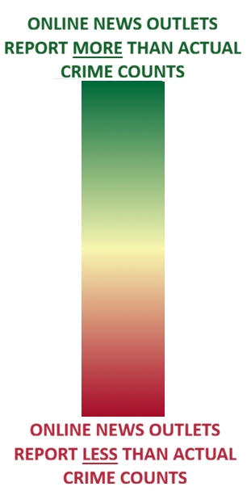

Select several crime types to see how do crime offence categories coincide with each other in the headlines?
Click rows to add boroughs and hover over columns to change the date in the Hover List below
